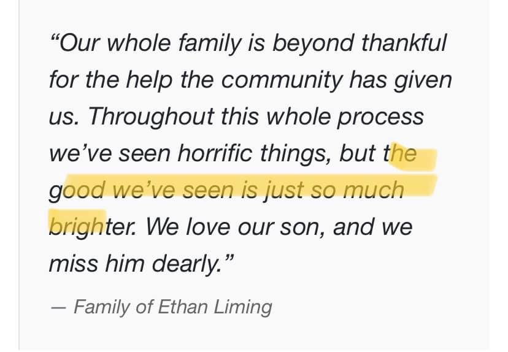

Mobile uploads
This is something that you can only know when you have seen extreme suffering. But Ethan‘s dad is absolutely correct. There is so much more good in the human race than there is bad. In fact I now believe that humans are the front line of bringing order to the chaos of the universe. These are some new thoughts that I’ve had recently. And I’ll talk more about it later. But I see it so clearly almost every single day.